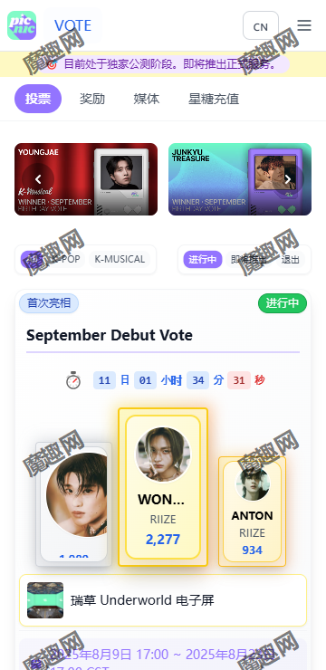
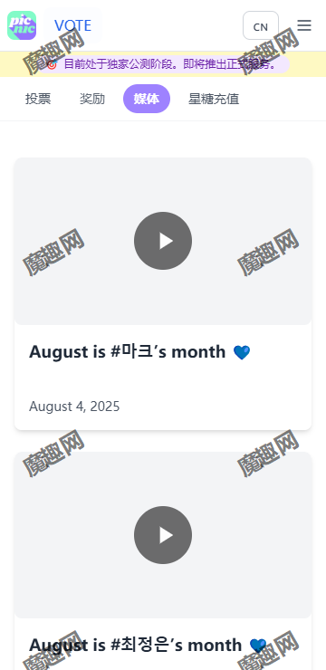

用了大半年 picnic：从攒棉花糖到看周榜，哪些习惯真的留了下来
装 picnic 快八个月，从一个完全不懂 K-pop 应援的路人变成每周日晚蹲周榜的老用户。这半年里哪些地方越用越顺手、哪些地方慢慢让人生厌，以及那些当初以为会坚持下去实际上再也没碰过的功能。
装 picnic 到现在快八个月了，从 1.1.30 版本一路用到现在。当初是朋友强塞给我的，说"你关注的那个团在上面出道了"——抱着试试看的心态下了，没想到一留就是大半年。那时候完全不懂什么是应援投票，以为就是个刷票的小游戏；现在才明白，它其实是粉丝圈和艺人经济之间的一个接口——从picnic官网到 APP 内的每一个投票活动，背后都牵连着艺人经纪、品牌方和粉丝社群。
当初为什么装
理由很简单：支持的团体要出道，朋友说"出道投票一票顶一票"。安装包从官方下载拿的，装包花了五分钟，注册的时候卡了一下——海外手机号验证不太友好，最后用邮箱过的。进去之后首页就是活动卡片流，密密麻麻的，什么周榜、生日榜、品牌对决，看一眼头都大。后来才知道那是 picnic 的常态：内容多，而且全是韩文标签混英文活动名，新手上手的门槛不在功能，在信息量。
越用越顺手的三件事
棉花糖攒法养成了习惯
棉花糖是 2026 年 8 月才出的新机制，取代了之前看广告送 Bonus Star Candy 的模式。刚出来的时候我以为又是个换汤不换药的套路，但后来发现它确实设计得比之前合理——每个广告位每小时最多 10 个，每日上限 120 个，早中晚各刷一轮就能打满。现在每天起床开一下、午休刷一下、睡前清一下，已经成了和刷微信一样顺手的动作。零氪玩家能攒到约每月 3600 个棉花糖，这个量级接近 30 美元档的充值额度——不得不说官方给零氪党留的通道确实实在。
周榜的节奏摸透了
Weekly PIC Chart 是常驻活动，每周一期，总票数动辄七八十万。刚开始我记不住开榜收榜的时间——它全部按 KST（韩国标准时间），比北京时间快一小时。后来在日历里设了提醒，周日晚上北京时间 10 点收榜前总会上去看看头部差距。2026 年第 39 期周榜，第一名 MARTIN 和第二名 ARNO 的差距只有 688 票，34.91% 对 34.70%——那是我第一次真切体会到零散票也能搅动排名。

媒体页找到了用法
媒体（Media）板块是我最近才真正用起来的地方。之前以为就是个放视频的展示页，后来发现它至少有三种用法：投票结束一两周后去确认奖励有没有兑现、翻对手的历史应援记录侦察敌情、或者纯粹看看某团是不是还没赢过任何活动。上个月支持的艺人刚拿下月度应援，我第一时间就是去媒体页找"September is #송하영's month"的视频——票没白投，心里踏实。

越用越烦的地方
说点反直觉的——广告我倒不烦，毕竟换来了棉花糖。真正让我头疼的有两个：
一是 KST 和北京时间的换算。每次活动时间都标 KST，虽然心里清楚加一小时，但每次开闹钟、记时间都要心算一遍，偶尔走神还搞错过一次收榜时间。picnic 官网的活动页面能不能加个"按本地时间显示"的开关？这不是什么复杂的功能，但日常使用里每一次都要手动换算，积少成多很烦。
二是 活动规则的文档质量参差不齐。出道投票那一页写得清清楚楚，周期、规模、奖励、策略建议一应俱全；但某些品牌对决活动的规则页就含糊得很——票池多少、奖励是什么、收榜时间，有的藏在活动详情页二级菜单里，有的干脆只在 APP 内弹窗说一句。我后来去picnic文档翻了翻，部分活动规则在文档里写得比 APP 内清楚不少；我理解 picnic 是个韩国公司的产品，英文文档是后来补的，但既然做了国际化，规则层面的信息架构至少得统一。
什么成了每天离不开的，什么碰都没再碰
离不开的是每周日晚蹲周榜结果。不是每天刷，但每周日 22:00 前必看。尤其是头部三人咬得紧的时候，最后一小时每刷新一次都在涨票，那心跳感是真的。媒体页也是，投完票之后过几天上去找应援视频，已经形成了习惯——没有这个"验证环节"，总觉得票投得没着没落。
碰都没再碰的是出道投票（Debut Vote）。当初装 picnic 就是奔着出道投票来的，但支持的艺人出道三个月后就再也没看到她上榜了——出道投票是给新人团的，周期短、票池小、波动大，等过了出道节点，这条路就自动关闭。现在出道投票的活动页我连点都不点开，看都不看。说起来这也算是 picnic 产品设计里的一个"自动淘汰"机制：不是所有功能都要一直留着，用不到的自然就消失了。
当初的两个判断，现在修正了
第一个，我以为自己能零氪到底。说实话，刚装的时候心里暗暗发誓"绝不花一分钱"。但三个月后，看着支持的艺人在月榜差了几百票就能拿第一，没忍住充了一次 30 美元的星糖——也不是经常充，但遇到关键节点的时候，那几百票确实能决定结果。现在我的策略是：棉花糖攒到上限就充，充了的星糖只在周榜最后 24 小时投，不分散用在小活动上。零氪不是不能玩，但遇到真喜欢的，掏这点钱其实比买张实体专便宜。
第二个，我以为这就是个刷票工具。现在发现它其实是个应援生态的入口——媒体页的奖励兑现、粉丝社群的讨论联动、艺人经纪公司的品牌对决活动，picnic 只是把这些环节串到了一个 APP 里。投票不是目的，投票赢了之后的应援位、媒体曝光、社区声量才是。明白了这一点，看周榜的心态也不一样了——不再是"我投了多少票"，而是"这次应援的点位是什么"。
去留结论：不会卸载，但也不会像刚开始那样
picnic 我是不会卸的。已经养成的习惯很难改：每周日晚看周榜、早中晚刷棉花糖、投完票去媒体页找应援视频——这些动作已经嵌进了生活节奏里。但也不会像刚装的时候那样激进了：那时候天天刷各种活动页、研究打投策略、收藏一堆帖子；现在只盯住周榜和月度应援，其他活动随缘。
什么信号出现就该换了？说真的没想过。但如果哪天支持的艺人完全不再上任何榜单了，或者 picnic 的规则改得让人跟不上——比如棉花糖机制被砍、周榜规模缩到没什么竞争——那时候可能真的会考虑。不过按目前的节奏，还能好好用一阵。
最后补一句：如果想装的话，picnic 官网的下载页现在只有 Android 和 iOS 两个渠道，没有 PC 端。文档站里倒是把各种活动规则和打投技巧写得挺全的，新手上手的时候翻翻中文文档能省不少事——这些资料在 GitHub、Gitee、GitCode 三个仓库都有同步维护，用哪个都行。